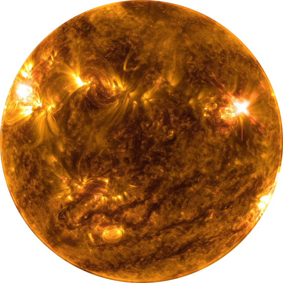

O Sol

O Sol é uma estrela situada no centro do nosso Sistema Solar. Sua gravidade mantém girando em sua órbita desde os maiores planetas, até pequenas partículas de detritos. No interior do Sol, são produzidas enormes quantidades de energia, através de reações de fusão de hidrogênio em Hélio. Essa intensa enerfia é a nossa fonte de luz e calor e sem ela, não existiria vida na Terra.
é uma estrela anã amarela e sua idade é de cerca de 4,6 bilhões de anos. Estima-se que levará em torno de 6,5 bilhões de anos até se transformar em uma anã branca.